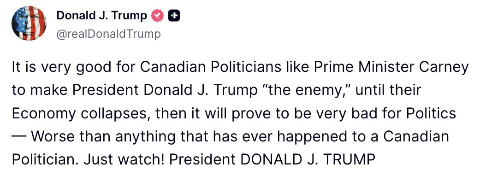

MAGAHEADS: GREER SAYS CANADA WALKED AWAY FROM “THE BEST DEAL IN THE WORLD”
The U.S. trade representative became the third senior Trump economic official in days to make the same basic public case: Washington offered Canada exceptional terms and Ottawa walked away. Prime Minister Mark Carney has disputed that account.
U.S. Trade Representative Jamieson Greer appeared on Fox News’s Special Report Thursday with a new version of an argument senior Trump administration officials have been making throughout the week: Washington offered Canada an unusually favourable trade agreement and Canada chose not to take it. “We offered them the best deal. They looked at it square in the face and turned around,” Greer told Bret Baier.
Greer said the United States had offered movement on steel, aluminum, automobiles and lumber and that President Donald Trump and Prime Minister Mark Carney reached what he described as a handshake understanding. He said Canadian negotiators later returned seeking additional tariff relief, an account Canada has not accepted as a complete description of why the talks ended.
Greer also said there had been contacts with Canadian officials since formal negotiations stopped Aug. 21 but no return to formal talks. He placed the next decision on Ottawa, telling Fox that the matter was now in Canada’s corner.
Those are Greer’s claims about a negotiation whose final text has not been made public. What can be compared publicly is the account he gave with the accounts offered by Commerce Secretary Howard Lutnick and Treasury Secretary Scott Bessent over the preceding days.
On Wednesday, Lutnick told CNBC’s Squawk Box that Canadian negotiators began adding what he called “crazy ideas” as a deal neared completion. He said he asked a Canadian counterpart whether Ottawa was trying to blow up the agreement and then alleged that Canada “blew it up for political reasons only.”
Lutnick’s account went beyond a disagreement over tariff rates and attributed a domestic political motive to the Canadian government. Canada has rejected that characterization, and no public Canadian confirmation has been produced for Lutnick’s description of the private exchange.
Two days earlier, Bessent used a CNBC appearance to emphasize the imbalance in economic size between the two countries and to mock Canada’s ability to retaliate. He also said Canada had been offered “the best trade deal of any country on the globe” before walking away at the last minute.
Greer, Lutnick and Bessent used different language and appeared in different interviews, and their appearances do not by themselves establish a centrally coordinated script. The documented similarity is narrower: all three publicly described the U.S. offer as exceptionally favourable and assigned responsibility for the breakdown to Ottawa.

Carney gave a different account Thursday in Thunder Bay. He dismissed Lutnick and Bessent’s political analysis by referring to them as appointed cabinet members rather than experts on Canadian politics, and said Washington had maintained an “our way or the highway” position on several issues during the closing hours of the negotiations.
Carney said some U.S. demands involving Canadian language and culture had since disappeared, which he welcomed, and said Canada remained prepared to negotiate when an agreement could provide sufficient stability and credibility. His argument has been that the problem was not simply the headline tariff rate but whether accepted terms could later be changed and whether other U.S. demands intruded on Canadian policy choices.
Carney had already said on Sept. 1 that Washington needed to “start being serious” before formal talks resumed. That remark came before Lutnick’s Wednesday television appearance, so it should not be read as a response to Lutnick’s later comments.
Trump entered the exchange directly later Thursday, writing on Truth Social that it was politically useful for Canadian politicians to make him “the enemy” until Canada’s economy collapsed. He ended the post with “Just watch!” — a presidential warning that went beyond the administration’s earlier argument over who caused the negotiating breakdown.
By Friday morning Trump had broadened the pressure beyond Canada, threatening to stop trading with countries that run deficits with the United States unless the Federal Reserve cuts interest rates. Canada was not named, but U.S. government figures show the American goods deficit with Canada exceeded its services surplus in 2025, leaving the United States in an overall bilateral deficit on those figures.
WHO SAID WHAT
- Aug. 21: Formal Canada–U.S. trade talks stop without an agreement.
- Aug. 31: Bessent says Canada was offered the best deal of any country and argues that an economy 13 times larger cannot be matched tariff for tariff.
- Sept. 1: Carney says Washington must “start being serious” before negotiations resume.
- Sept. 2: Lutnick says Canadian negotiators added late demands and alleges the deal was blown up for political reasons.
- Sept. 3: Carney describes the U.S. posture as “our way or the highway”; Greer tells Fox Canada rejected what he calls the best deal in the world; Trump later warns about Canada’s economy collapsing.
- Sept. 4: Trump threatens a broader trade cutoff against deficit countries unless the Federal Reserve lowers rates.
The public record therefore contains two competing explanations of the same failed negotiation. Washington’s senior economic officials say Ottawa was offered exceptional terms and asked for too much; Carney says the terms did not provide the stability or policy room Canada required.
CNBC — Howard Lutnick on Squawk Box
CNBC transcript excerpt via RealClearPolitics — Scott Bessent
Reuters — Carney response and Trump’s Sept. 3 post
Reuters — Carney’s Sept. 1 remarks
Reuters — Trump’s Sept. 4 deficit-country trade threat
Office of the U.S. Trade Representative — Canada trade figures